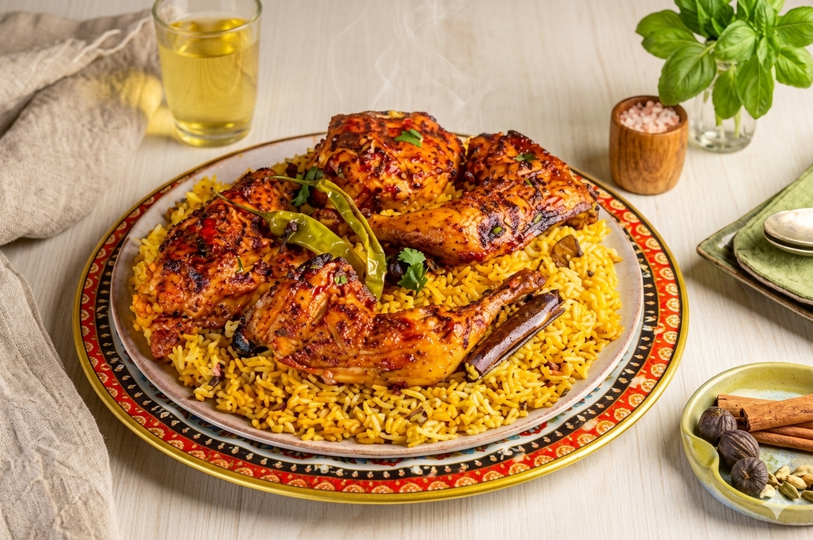
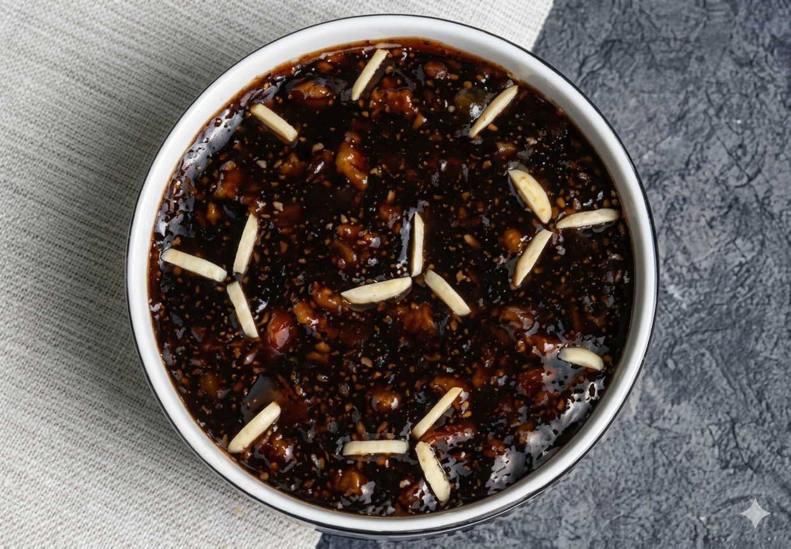

نكهات منزلية بطابع أصيل
اللذة والإبداع في مكان واحد
متجر نفس يجمع لك أشهى الأطباق المنزلية من أيادٍ ماهرة وشغوفة، حتى تصلك وجبات يومية بطعم دافئ، وجودة موثوقة، وتجربة تعبّر عن كرم المطبخ المنزلي.
عن متجر نفس
منصة منزلية تجمع النكهات الأصيلة وتقرّب المطبخ الدافئ من كل زائر.
نوفر مساحة مرتبة وواضحة لاستكشاف الأكلات المنزلية والمخبوزات والحلويات، بحيث يجد المستخدم خيارات متنوعة بطعم البيت وجودة موثوقة وتجربة سهلة.


نفس AI
مساعد ذكي داخل المتجر يساعد على العثور على الأطعمة المناسبة بسرعة ودقة.
يعتمد نفس AI على فهم كلمات البحث والذوق العام، ثم يساعد المستخدم في الوصول إلى الأكلات الأقرب لرغبته، سواء كان يبحث عن طبق يومي أو حلويات أو وجبة منزلية بطابع معيّن.